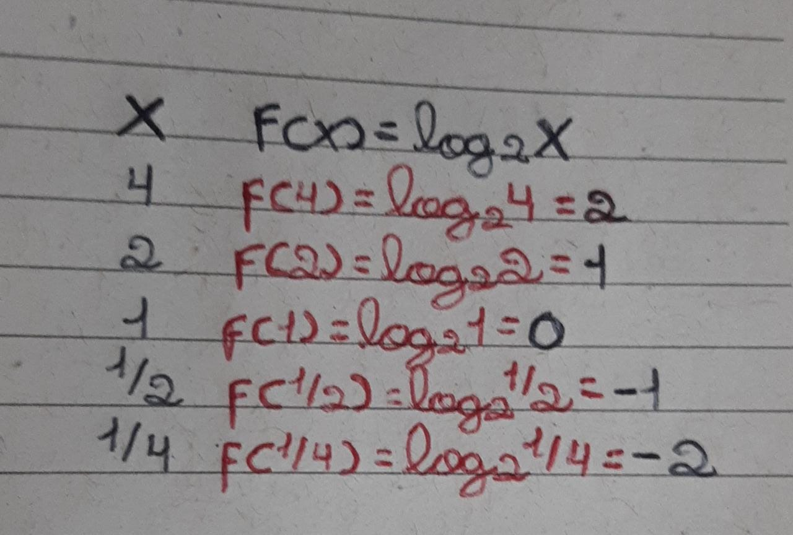
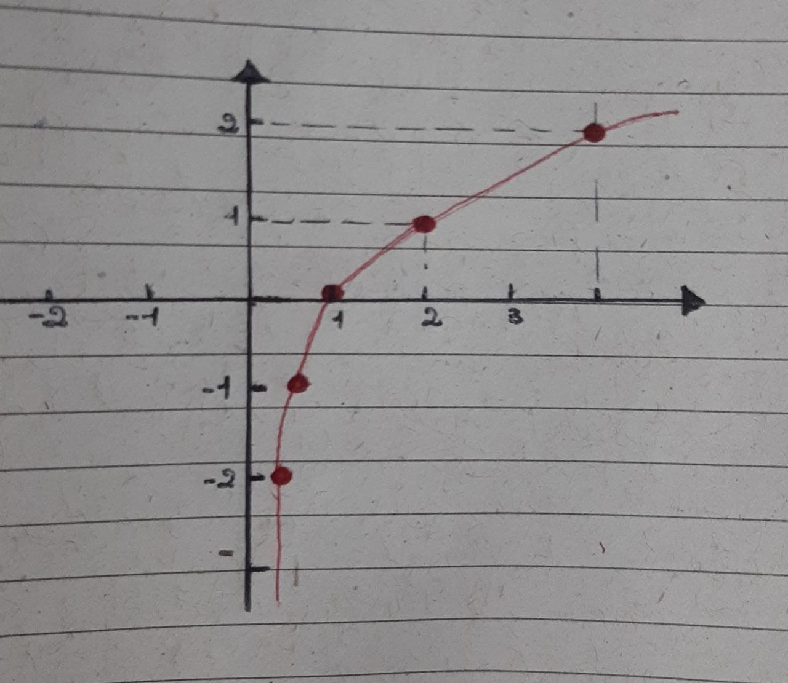

As Funções Logarítmicas modelam fenômenos onde a variável dependente cresce ou decresce muito lentamente, sendo as variações de ambas as funções proporcionais à variável independente. Esta característica tem diversas aplicações em outras áreas além da Matemática, como Economia, Biologia, Física, Geografia, Agronomia, Química entre outras.
O domínio de uma relação entre dois conjuntos é importante para que essa relação seja classificada como uma função. A fim de que tenhamos de fato uma função logarítmica, é necessário que o domínio da função seja o conjunto dos números reais positivos e não nulos, ou seja:
D(f) = (0, +∞) = ℝ
Em uma função, todo elemento do domínio deve ter necessariamente uma imagem no contradomínio. Supondo que x possa ser negativo, encontraremos alguns casos de indeterminação, como no exemplo a seguir:"
f(x)= log3x se x = − 3
"Não existe nenhum valor de b que faz com que 3b=−3, logo não há uma função, o que torna necessária essa restrição no domínio da função, fazendo com que a variável independente seja sempre um número real positivo diferente de zero."
O gráfico de uma função logarítmica pode ser construído a partir da atribuição de valores a x na qual encontramos seus pares ordenados y. No entanto, é importante saber quais valores de x poderão ser atribuídos na função, tendo em vista as condições de existência dos logaritmos. Isso significa que é interessante estabelecer o domínio da função antes de construir seu gráfico. Da mesma forma, saber se a curva é crescente ou decrescente e quais as interseções dela com os eixos coordenados são importantes. Nesse sentido, podemos estabelecer alguns passos para construir o gráfico.
Para construção do gráfico, vamos atribuir valores para x e encontrar o correspondente em y.
Exemplo: f(x) = log2x
Marcando-se os pontos no plano cartesiano, é possível realizar-se a representação gráfica.
Em relação ao conteúdo, acredito que esse tenha sido o que encontrei mais dificuldade ao realizar. Sempre tive facilidade em fazer gráficos, porém como há algumas restrição por conta dos logaritmos, nem sempre todos os números podem ser usados, o que acabava me deixando confusa em quais usar na realização do mesmo. Para solucionar isso, busquei refazer exemplos dados em aula, pois encontrei nesse modo uma forma em que consigo compreender em passos a resolução.